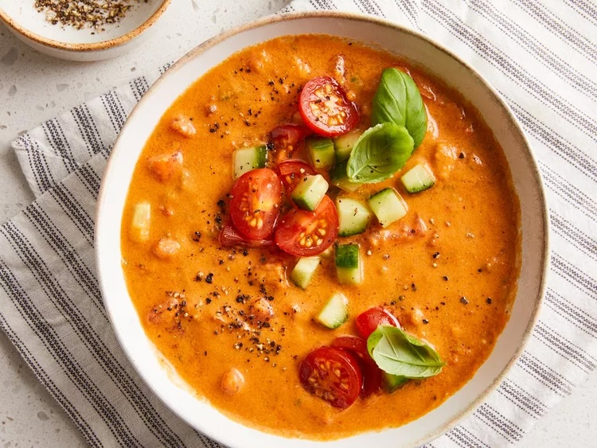

Chef John;s Gazpacho
by John Mitzewich | Updated on November 17, 2023

Description
Gazpacho is a smooth, blended, cold soup made with fresh
vegetables. Traditionally, tomatoes and cucumbers are heavily
featured. The dish, which has Spanish and Portuguese origins, is a
summer staple.
Chef John's Gazpacho Ingredients
These are the ingredients you’ll need to make Chef John’s top-rated gazpacho recipe:
- Tomatoes: Tomatoes are the main ingredient in gazpacho. You’ll need four large tomatoes and a pint of cherry tomatoes.
- Other produce: Other ingredients you’ll need from the produce section include English cucumbers, green onions, a jalapeño, a lime, fresh garlic, and fresh basil.
- Seasonings: This Spanish gazpacho recipe is seasoned with salt, cumin, oregano, cayenne pepper, and black pepper
- Oil: Olive oil ensures a rich, smooth, velvety finished product.
- Sauces: You’ll also need Worcestershire sauce and balsamic vinegar.
How to Make Chef John's Gazpacho Step-By-Step
You can make this fresh watermelon salad up to a day in advance. However, it’s best to add the feta just before serving so it doesn’t become soggy.
- Combine and puree the ingredients according to the detailed recipe.
- Cover and chill the soup for at least two hours to allow the flavors to meld.
- Top the gazpacho with fresh basil for serving.